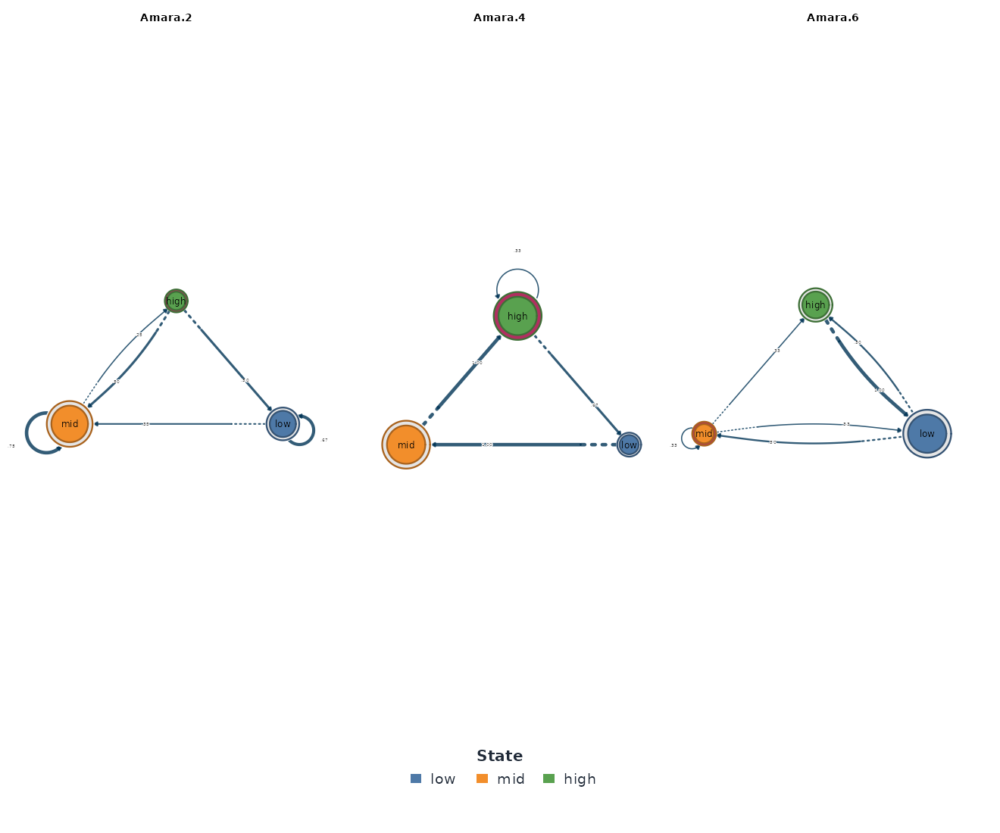
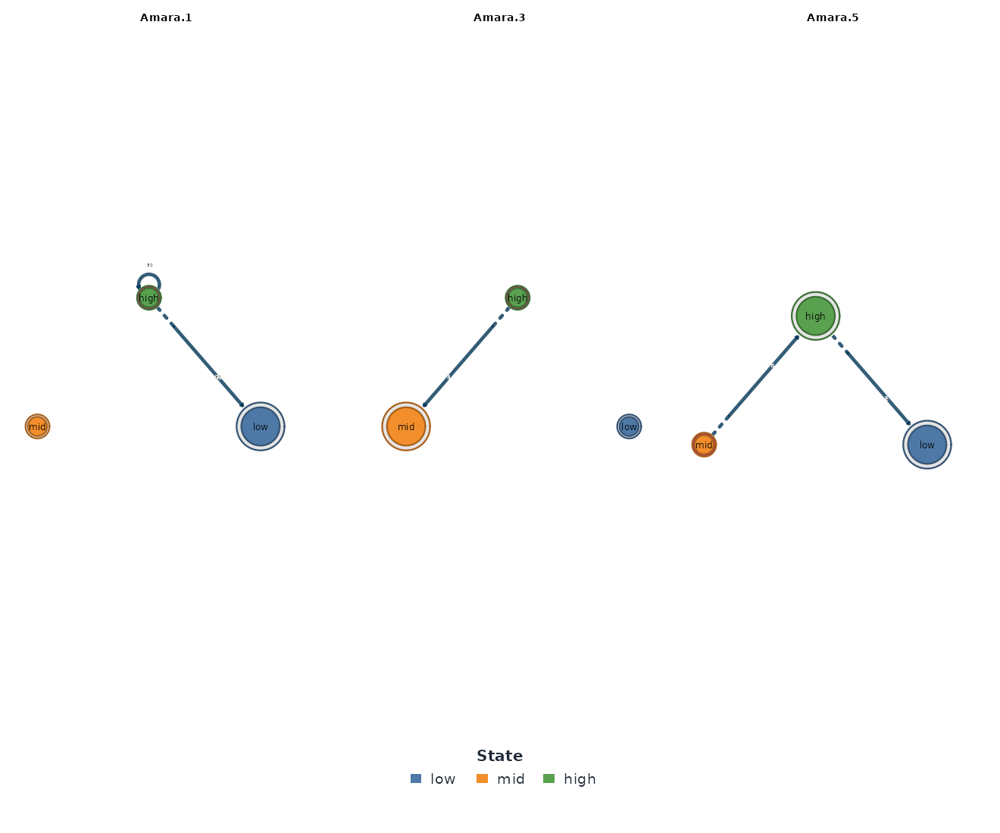

Grouped Transition Models: One Network per Condition
Mohammed Saqr
University of Eastern FinlandSonsoles López-Pernas
University of Eastern FinlandManuel J. Gómez
University of MurciaSource:
vignettes/group-models.Rmd
group-models.RmdThe question
Does the same person regulate their effort differently on different
kinds of day? The esm_srl study prompted 41 students up to
a few times a day for momentary reports of self-regulation, motivation,
and anxiety on 0-100 scales, and each report carries a
day_type label: weekday or weekend. A single transition
network estimated from all of it would answer how momentary
effort moves between low, mid,
and high on average, and in doing so would erase
exactly the distinction the day-type column exists to draw.
The group argument of ts_tna() and its
siblings answers the conditional question instead: one network per day
type, both cut from one shared state alphabet, packaged so that
Nestimate’s grouped verbs compare them directly.
One call, one network per condition
group names a column of the data. Every level of that
column becomes its own fully estimated ts_tna model. Effort
has four missing values, so the incomplete rows are set aside first.
effort_rows <- subset(esm_srl, !is.na(effort))
by_day <- ts_tna(
effort_rows,
value = "effort",
id = "name",
time = "occasion",
group = "day_type",
labels = c("low", "mid", "high")
)
by_day
#> Group Networks (2 groups, group_col: day_type)
#>
#> Group Nodes Edges Weights
#> weekday 3 9 [0.098, 0.631]
#> weekend 3 9 [0.085, 0.633]Two day types, two networks. as.data.frame() with
what = "groups" is the tidy index of how much data stands
behind each one, and it is where every grouped analysis should
start.
as.data.frame(by_day, what = "groups")
#> group type sequences observations states edges
#> 1 weekday tna 238 2033 3 9
#> 2 weekend tna 233 783 3 9The weekday network rests on 2,033 observations in 238 sequences, the
weekend network on 783 in 233. The sequences column is the
one to read closely: a sequence is cut at every change of student
and at every change of day type, so a working week of roughly
two reports a day forms one sequence of eight to ten observations, while
a weekend forms one of three to four. The two cut rules are not the
same. A change of student separates measurements that were never
consecutive; a change of day type falls between two genuinely adjacent
measurements, and the transition across it, from Friday evening to
Saturday morning, is excluded from both networks because it belongs to
neither day type. The next section shows what goes wrong without that
rule.
Why not subset the data and build each model by hand?
Subsetting looks equivalent: keep the weekend rows, call
ts_tna() on them, repeat for weekdays. It is not
equivalent, and it fails in two distinct ways.
weekend_alone <- ts_tna(
subset(effort_rows, day_type == "weekend"),
value = "effort",
id = "name",
time = "occasion",
labels = c("low", "mid", "high")
)
head(summary(series_networks(weekend_alone)), 3)
#> series type observations states edges
#> 1 Amara tna 15 3 7
#> 2 Bao tna 22 3 8
#> 3 Cira tna 22 3 8First failure: the subset welds broken time back together
The hand-built model holds each student’s weekend reports as one sequence. The first student’s 15 weekend reports above span many separate weekends, yet they form a single unbroken series. Across all 41 students the 783 weekend observations become 41 sequences carrying 742 transitions. The grouped index showed the truth: those observations form 233 separate weekend runs, which contain only 783 − 233 = 550 genuine transitions. The hand-built model therefore counts 192 transitions, about a quarter of its total, between measurements that were never adjacent in time. Each one joins the end of one weekend to the start of the next across an entire intervening week, and each is a transition that never occurred.
The grouped model never counts them. A sequence is cut at every change of group, so a transition is only ever counted between genuinely consecutive measurements within one day type.
Second failure: each subset learns its own thresholds
The second failure is quieter. The default
discretization = "quantile" cuts at the tertiles of
whatever data it is given, so the hand-built weekend model learns cut
points from weekend reports alone:
summary(
discretize(
subset(effort_rows, day_type == "weekend"),
value = "effort",
id = "name",
time = "occasion",
labels = c("low", "mid", "high")
)
)
#> state count proportion mean_value
#> 1 low 261 0.3333333 28.04603
#> 2 mid 261 0.3333333 63.07903
#> 3 high 261 0.3333333 86.32532By construction, exactly a third of weekend reports land in each state (261 apiece), so the weekend composition can carry no information at all. The grouped model cuts the states from the pooled series before splitting, and its weekend column reports the real composition on the shared scale:
state_distribution(by_day)
#> group state count proportion
#> 1 weekday low 694 0.3413674
#> 2 weekday high 676 0.3325135
#> 3 weekday mid 663 0.3261190
#> 4 weekend mid 268 0.3422733
#> 5 weekend high 262 0.3346105
#> 6 weekend low 253 0.3231162On this panel the distortion happens to be mild, because weekday and
weekend effort sit at nearly the same level (means of 58.5 and 59.2):
the shared scale puts each weekend state within a percentage point or
two of a third. That mildness is a property of these data, not of the
method. For groups that differ in level, such as a clinical against a
control cohort or a high- against a low-workload term, per-subset
tertiles redefine the states inside each group, and the artifact grows
with the very difference under study. The grouped model makes the safe
construction the default; explicit breaks (as in
vignette("nestimate-workflow", package = "tsn")) achieve
the same discipline by hand.
The collection is data
Every view of the grouped model is a data frame with a leading
group column. The default view is the edge list:
head(as.data.frame(by_day), 6)
#> group from to weight
#> 1 weekday low low 0.6199021
#> 2 weekday mid low 0.2944162
#> 3 weekday high low 0.1150592
#> 4 weekday low mid 0.2822186
#> 5 weekday mid mid 0.4297800
#> 6 weekday high mid 0.2538071Because both groups share one alphabet, a single edge can be read across them:
subset(as.data.frame(by_day), from == "high" & to == "mid")
#> group from to weight
#> 6 weekday high mid 0.2538071
#> 15 weekend high mid 0.3419689The probability that a high-effort report softens to mid
is 0.254 on weekdays and 0.342 on weekends. This is the edge the
inference section below puts to the test. what = "series"
returns the per-observation table behind the networks, with the
run-level sequence IDs, and summary() adds Nestimate’s
network-metric panel, one column per group:
summary(by_day)
#> Network metrics by group:
#> metric weekday weekend
#> Node Count 3 3
#> Edge Count 9 9
#> Network Density 1 1
#> Mean Distance 0.2199 0.2278
#> Mean Out-Strength 1 1
#> SD Out-Strength 0.03206 0.1015
#> Mean In-Strength 1 1
#> SD In-Strength 0 0
#> Mean Out-Degree 3 3
#> SD Out-Degree 0 0
#> Centralization (Out-Degree) 0 0
#> Centralization (In-Degree) 0 0
#> Reciprocity 1 1Most rows are structural constants for a full three-state network, but the standard deviation of out-strength is not: 0.032 on weekdays against 0.102 on weekends. Weekday rows spread their probability almost evenly; weekend rows are the more polarized ones.
Composition and dynamics
Composition
The state distributions above showed both day types holding close to a third of reports in each state. The mosaic view draws the transition structure itself, one panel per group, with tile area encoding transition probability:
mosaic_plot(by_day)
The two mosaics differ mainly at the high state: the
weekend network routes more probability from high to
mid (0.342 against 0.254) and retains less in
high (0.534 against 0.631). This is the same softening the
edge table reported, now shown as tile area rather than as a number.
Mean first passage times
passage_time() reports, per group, the expected number
of steps to reach each state from each other state (Kemeny & Snell,
1976).
passage_time(by_day)
#> Mean First Passage Times -- 2 groups: weekday, weekend
#>
#> --- weekday ---
#> Mean First Passage Times (3 states)
#>
#> low mid high
#> low 2.9 3.6 6.4
#> mid 4.6 3.1 5.0
#> high 5.9 3.8 3.0
#>
#> Stationary distribution:
#> low mid high
#> 0.3483 0.3200 0.3317
#>
#> --- weekend ---
#> Mean First Passage Times (3 states)
#>
#> low mid high
#> low 2.8 3.4 6.7
#> mid 4.7 2.7 5.1
#> high 5.6 3.1 3.6
#>
#> Stationary distribution:
#> low mid high
#> 0.3549 0.3666 0.2785The travel times are broadly similar, since every state is reachable
within three to seven steps on either day type, but the stationary
distributions tilt: the weekday chain settles with 33.2% of its time in
high, the weekend chain with 27.9%. Since the observed
compositions are nearly identical, that tilt is carried by the dynamics,
and it points at the same place the edge table did: weekends hold high
effort less firmly.
Entropy and centrality
transition_entropy(by_day)
#> Transition Entropy - 2 groups: weekday, weekend
#>
#> Entropy rate per group:
#> weekday weekend
#> 1.3650 1.3853Both day types run near the log2(3) = 1.585 ceiling, at
1.37 and 1.39 bits, so momentary effort is weakly predictable
everywhere; neither day type is a regime of rigid habit.
day_centrality <- net_centrality(by_day)
#> centralities computed excluding loops (diagonal). Pass `loops = TRUE` to include self-transitions.
day_centrality
#> $weekday
#> state InStrength Betweenness Diffusion
#> low low 0.4094755 0 0.08338405
#> mid mid 0.5360257 2 1.00000000
#> high high 0.3736830 0 0.00000000
#>
#> $weekend
#> state InStrength Betweenness Diffusion
#> low low 0.3854634 0 0.0000000
#> mid mid 0.6244548 2 1.0000000
#> high high 0.3569680 0 0.6771486
#>
#> attr(,"measures")
#> [1] "InStrength" "Betweenness" "Diffusion"
#> attr(,"class")
#> [1] "net_centrality_group" "list"
plot(day_centrality)
mid is the hub of both networks. It carries the highest
in-strength (0.54 weekday, 0.62 weekend) and is the only state with
nonzero betweenness, because movement between low and
high routes through the middle of the scale. The message
printed above the tables matters for any transition network:
self-transitions are excluded by default, or the diagonal would drown
the between-state structure.
net_edge_betweenness() runs group-wise as well, with one
caveat: its result drops back to a plain netobject_group,
so apply tsn’s tidy accessors before this step, not after it.
net_edge_betweenness(by_day)
#> Group Networks (2 groups)
#>
#> Group Nodes Edges Weights
#> weekday 3 4 [2.000, 2.000]
#> weekend 3 4 [2.000, 2.000]Drawing the networks
There is no single picture of a grouped model; plot()
draws one selected group with the full plot.ts_tna()
surface.
plot(by_day, group = "weekday", type = "network")
plot(by_day, group = "weekend", type = "network")
Because the two networks share one node set, the figures are directly
comparable, and the difference to look for is concentrated at the
high node: its self-loop is heavier on weekdays (0.631
against 0.534) and its outflow to mid heavier on
weekends.
Are the differences real?
The permutation test
permutation() on a grouped model shuffles sequences
between the groups to build a null distribution per edge.
day_comparison <- permutation(by_day, iter = 1000, seed = 2026)
summary(day_comparison)
#> group from to weight_x weight_y diff effect_size
#> 1 weekday vs weekend low low 0.61990212 0.63276836 -0.0128662409 -0.289921277
#> 2 weekday vs weekend low mid 0.28221860 0.28248588 -0.0002672786 -0.006925447
#> 3 weekday vs weekend low high 0.09787928 0.08474576 0.0131335195 0.584487518
#> 4 weekday vs weekend mid low 0.29441624 0.26111111 0.0333051325 0.900900323
#> 5 weekday vs weekend mid mid 0.42978003 0.46666667 -0.0368866328 -0.878891544
#> 6 weekday vs weekend mid high 0.27580372 0.27222222 0.0035815003 0.093352074
#> 7 weekday vs weekend high low 0.11505922 0.12435233 -0.0092931099 -0.329460065
#> 8 weekday vs weekend high mid 0.25380711 0.34196891 -0.0881618053 -2.327154276
#> 9 weekday vs weekend high high 0.63113367 0.53367876 0.0974549153 2.092734296
#> p_value sig
#> 1 0.77722278 FALSE
#> 2 0.99500500 FALSE
#> 3 0.56143856 FALSE
#> 4 0.38061938 FALSE
#> 5 0.37662338 FALSE
#> 6 0.92007992 FALSE
#> 7 0.77822178 FALSE
#> 8 0.02297702 TRUE
#> 9 0.04595405 TRUEOne difference holds up under the null: high -> mid
(0.254 weekday, 0.342 weekend, p = 0.023). Its mirror image, the fall in
high -> high retention from 0.631 on weekdays to 0.534
on weekends, sits exactly on the significance boundary (p = 0.046) and
moves around 0.05 under other seeds, so it should be read as suggestive
rather than established. Together they tell one coherent story: on
weekends, a high-effort spell is more likely to soften into the mid
range and less likely to hold. The other seven edges do not differ, so
weekday and weekend self-regulation share most of their structure.
The metric panel
compare_model() condenses the pair into
matrix-comparison metrics.
compare_model(by_day, i = "weekday", j = "weekend")
#> Network comparison
#> ==================
#> Summary metrics:
#> category metric value
#> Weight Deviations Mean Abs. Diff. 0.03277
#> Weight Deviations Median Abs. Diff. 0.01313
#> Weight Deviations RMS Diff. 0.04735
#> Weight Deviations Max Abs. Diff. 0.09745
#> Weight Deviations Rel. Mean Abs. Diff. 0.09832
#> Weight Deviations CV Ratio 1.059
#> Correlations Pearson 0.9657
#> Correlations Spearman 0.8333
#> Correlations Kendall 0.6667
#> Correlations Distance 0.9357
#> Dissimilarities Euclidean 0.142
#> Dissimilarities Manhattan 0.295
#> Dissimilarities Canberra 0.4608
#> Dissimilarities Bray-Curtis 0.04916
#> Dissimilarities Frobenius 0.116
#> Similarities Cosine 0.9922
#> Similarities Jaccard 0.9063
#> Similarities Dice 0.9508
#> Similarities Overlap 0.9508
#> Similarities RV 0.9744
#> Pattern Similarities Rank Agreement 1
#> Pattern Similarities Sign Agreement 1
#>
#> Network metrics (x vs y):
#> metric x y
#> Node Count 3 3
#> Edge Count 9 9
#> Network Density 1 1
#> Mean Distance 0.2199 0.2278
#> Mean Out-Strength 1 1
#> SD Out-Strength 0.03206 0.1015
#> Mean In-Strength 1 1
#> SD In-Strength 0 0
#> Mean Out-Degree 3 3
#> SD Out-Degree 0 0
#> Centralization (Out-Degree) 0 0
#> Centralization (In-Degree) 0 0
#> Reciprocity 1 1A Pearson correlation of 0.966 between the two weight matrices, with
a maximum absolute difference of 0.097 on the
high -> high retention: close networks whose one real
gap is how long high effort lasts. Always name i and
j, because with more than two groups there is no meaningful
default pair.
Bootstrap and Bayesian certainty per group
bootstrap_network() resamples sequences within each
group; certainty() reaches a similar verdict from a
Dirichlet posterior, without resampling.
bootstrap_network(by_day, iter = 200, seed = 2026)
#> Edge weekday weekend
#> --------------------------------------------
#> low→low 0.619 0.632
#> high→high 0.632 0.533
#> mid→mid 0.428 0.469
#> high→mid 0.254 0.342
#>
#> Grouped Bootstrap [2 groups | 200 iterations | 95% CI]
#> weekday 8 sig / 9 total
#> weekend 4 sig / 9 total
#> Shared (all groups) 4 edges
set.seed(2026)
certainty(by_day)
#> Edge weekday weekend
#> --------------------------------------------
#> high→high 0.630 0.532
#> low→low 0.619 0.630
#> mid→mid 0.430 0.466
#> high→mid 0.254 0.342
#> mid→low 0.295 0.262
#> ... and 2 more shared significant edges
#>
#> Grouped Bootstrap [2 groups | NA iterations | 95% CI]
#> weekday 9 sig / 9 total
#> weekend 7 sig / 9 total
#> Shared (all groups) 7 edgesThe weekday network, with 2,033 observations behind it, keeps eight of nine bootstrap edges and all nine posterior-certain ones; the weekend network, with 783, keeps four and seven. Equal sequence counts (238 against 233) do not buy equal precision when the sequences differ in length: a weekend run is about a third as long as a weekday run, so the weekend estimates rest on less data. Reading the index table first is not a formality.
Is first order enough, per group?
markov_order_test() (after Anderson & Goodman, 1957)
checks the Markov assumption group by group.
set.seed(2026)
markov_order_test(by_day)
#> Markov Order Test -- 2 groups: weekday, weekend
#>
#> --- weekday ---
#> Markov Order Test [within-w permutation, n_perm = 500, alpha = 0.050]
#> 238 sequences / 2033 observations / 3 states
#>
#> Selected order BIC: 2 AIC: 3 permutation-LRT: 3
#>
#> order loglik AIC BIC df g2 p_permutation p_asymptotic
#> 0 -2233.12 4470.24 4481.48 NA NA NA NA
#> 1 -1963.44 3942.88 3987.82 4 539.1 0.001996008 2.336904e-115
#> 2 -1860.32 3772.65 3918.70 12 204.5 0.001996008 3.830703e-37
#> 3 -1803.75 3767.49 4216.87 36 111.7 0.001996008 1.110201e-09
#> significant
#> NA
#> TRUE
#> TRUE
#> TRUE
#>
#> --- weekend ---
#> Markov Order Test [within-w permutation, n_perm = 500, alpha = 0.050]
#> 219 sequences / 769 observations / 3 states
#>
#> Selected order BIC: 1 AIC: 2 permutation-LRT: 2
#>
#> order loglik AIC BIC df g2 p_permutation p_asymptotic significant
#> 0 -844.60 1693.21 1702.50 NA NA NA NA NA
#> 1 -768.44 1552.88 1590.04 4 149.69 0.001996008 2.367982e-31 TRUE
#> 2 -741.43 1534.85 1655.62 12 52.90 0.001996008 4.292255e-07 TRUE
#> 3 -720.22 1546.44 1792.63 26 28.57 0.630738523 3.311396e-01 FALSEThe weekday test prefers a higher order (BIC selects 2, AIC and the permutation LRT select 3): within a working week, yesterday’s effort carries information beyond today’s. The weekend test is more temperate, since BIC keeps order 1 and the LRT stops at 2, though its shorter runs give order-3 contexts little data in which to show up. Read both networks as one-step summaries, with the weekday summary the more visibly incomplete of the two.
Stability under case dropping
Two checks ask whether the results would survive a smaller sample:
centrality_stability() for the centrality
orderings, casedrop_reliability() for the edge
weights themselves (both after Epskamp, Borsboom & Fried, 2018).
set.seed(2026)
centrality_stability(by_day, iter = 100)
#> Centrality Stability (2 networks, threshold = 0.70)
#> InStrength OutStrength Betweenness
#> weekday 0.6 0.7 0.9
#> weekend 0.7 0.5 0.8
day_reliability <- casedrop_reliability(by_day, iter = 100, seed = 2026)
day_reliability
#> Edge-weight Case-dropping Stability (2 networks, threshold = 0.70)
#> n_cases n_edges CS
#> weekday 238 6 0.3
#> weekend 233 6 0.5
plot(day_reliability)
The verdicts are mixed, and the mixture is the point. The centrality orderings are serviceable (coefficients of 0.5 to 0.9), but the edge-weight CS-coefficients come back at 0.3 for weekdays and 0.5 for weekends, at or below the 0.5 bar for acceptable stability. Individual edge weights from this panel should be reported with their intervals, not as point values, and the permutation result above should carry the inferential weight. A stability check that returns an uncomfortable number has done its job.
Pruning the collection
net_prune() applies group-wise and returns the same
class, so a pruned collection flows back into every verb above.
net_prune(by_day, method = "threshold", threshold = 0.3)
#> Group Networks (2 groups)
#>
#> Group Nodes Edges Weights
#> weekday 3 5 [0.098, 0.631]
#> weekend 3 5 [0.085, 0.633]Each day type keeps five of its nine edges at a 0.3 threshold. Prune
after testing, not before: the high -> mid edge that
carries the weekend difference sits at 0.254 on weekdays, so a premature
prune would have deleted one side of the finding.
What to watch for
Four failure modes, all of which announce themselves:
-
A level with almost no data. Every level of the
grouping column gets a network, however little stands behind it. The
groupsindex is the guard; readsequencesandobservationsbefore edges. - A group column that alternates too fast. Every change of group cuts a sequence, so a column that flips at almost every observation leaves runs of length one and no transitions at all. In the extreme case, a group whose observations are never adjacent, the model warns that the group’s network is empty. Day type is a well-behaved grouping variable precisely because it changes only twice a week.
-
A group whose rows do not survive discretization.
Temporal discretizers such as
ordinaldrop tail rows that cannot fill an embedding window. If that removes a group entirely, the model warns that the group was lost to discretization. A group you excluded yourself viaseriesis not warned about, because that exclusion was your decision. - Comparing a grouped model with a hand-subset model. The two are not estimates of the same thing, for both reasons in the section above.
When to use which
-
group. The condition already exists as a column, there may be more than two levels, and the comparison itself is the point. Pooled discretization and boundary-safe sequence cutting come built in. -
Two models plus
permutation(x, y). The split is not a column but a derived rule (an occasion cutoff, an external roster), and there are exactly two sides. Fix the state alphabet yourself with explicitbreaks, or the comparison inherits the threshold artifact. The companion vignettevignette("nestimate-workflow", package = "tsn")runs this design on thesrlpanel’s course halves. -
series_networks(). The unit of comparison is the individual student (one network per person), not a condition shared across students. - A single pooled model. No conditioning variable at all; the average dynamics are the question.
References
Anderson, T. W., & Goodman, L. A. (1957). Statistical inference about Markov chains. The Annals of Mathematical Statistics, 28(1), 89–110.
Epskamp, S., Borsboom, D., & Fried, E. I. (2018). Estimating psychological networks and their accuracy: A tutorial paper. Behavior Research Methods, 50(1), 195–212.
Kemeny, J. G., & Snell, J. L. (1976). Finite Markov Chains. Springer.